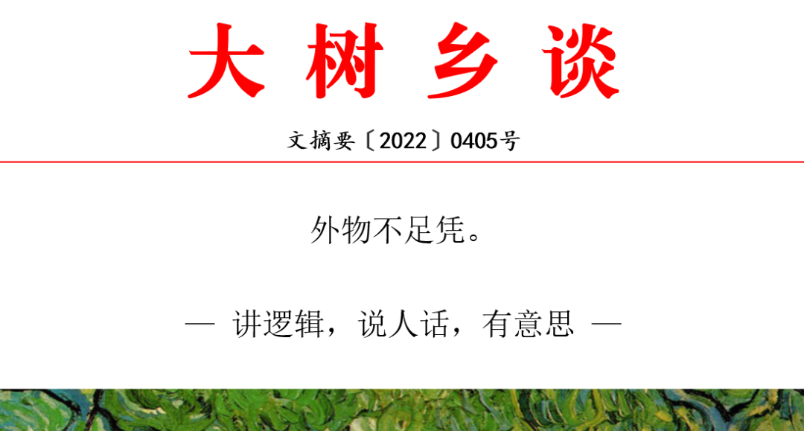

到底什么是稳定？

今天是假期最后一天，简单聊聊人生发展。 一年了经常有读者朋友留言询问职业选择的问题，比较多的是体制内外的选择，在小镇发完《中央部委公务员的待遇与发展》之后，问的就更多了，很多人表示真没想到中央部委公务员竟然是这样的。 也有朋友反复问某某体制内职位待遇如何、发展如何、是不是方便办事等等，小镇知道的也都说了，但还是一直追问，干脆说把手头所有的选择都发出来，小镇一并看看。 这一看大体就明白了，其实提问的朋友大多数已经确定了选什么，只是因为种种原因纠结着，推想大概率是因为家庭或者对编制的崇拜。
在经济不太理想、甚至有下行可能的时候，体制、编制带来的安全感确实是巨大的诱惑，小镇也一直说公务员绝对是不差的选择，但未必是最好的。 中国现在的经济确实遇到困难，但网络上往往会把坏消息放大化，毕竟好事谁会去说呢？网上看着中国经济好像马上要完了，关掉手机电脑去现实走走好像也没那么差。要问问自己：中国现在的经济真的不行了吗？中国的经济是起不来了吗？ 还是要对未来有信心，更要相信无论整体经济如何，一定有人过得不错，那为什么不想办法让自己成为过得不错的那批人？
小镇一直认为稳定的从来不是什么编制、更不是公务员的身份，关键在自己。 有不少读者朋友，手里已经拿到的职位已经很不错了，比如某些细分行业的龙头、某个正要加速发展的新兴行业等等，以此作为职业的第一步，就算公司不行了，那大不了换一家就是了，关键是自己有没有这个能力和底气。 现在网上说互联网大裁员，好像在互联网工作的人已经活不下去了。可实际上被互联网裁员的拿个“N+1”甚至“2N”补偿并不难，还可以休息几个月再找工作，只要互联网行业还在继续发展，不过是换一家公司，毕竟真正让自己谋生的并不是某家公司的职位，而是自己的工作能力、工作经验。
这跟公务员本质上是一样的，只不过公务员的职位更加稳定，但稳定往往也意味着更低的成长可能性，比如工资持续的稳定、又比如终生入职即巅峰。并非哪里都是江浙粤，也并非都在部委省厅，就如同体制外不是人人都在阿里腾讯等大厂一样。 倘若在体制外能够在10年内把30年甚至更久的钱赚完了，稳定与否还重要吗？随着市场经济的持续发展，对普通人来说，钱比公职人员这个身份还好用。 当然肯定有人很难找到工作，比如互联网行业大龄程序员，但他们找不到的是跟过去一样的高收入，而不是真的找不到。
更何况，人要居安思危，就算是身在体制内也要不断强化自己的职业能力，谁能知道未来会发生什么呢？ 这些年小镇也看到过不少公务员，因为种种原因失去了这个身份，对与错且不论，由于公务员在2014年以前社保仅仅是视同缴纳，当失去身份以后，退休金也没了。不说这种特殊情况，前些年觉得很稳定的国企、事业单位已经改革多年，大多数也失去了曾经的企业编、事业编，谁敢说公务员的行政编未来不会变呢？ 一切外在的都不足以支撑数十年甚至上百年的人生，真正可靠的只有自己，比如围绕主业提前谋划第二职业、形成有竞争力的复合能力，又比如坚持终生学习不断深挖，又或者在关键的几次做好选择，等等。
属于自己的远比一个编制更靠谱。 假期里跟朋友们交流不少，有一些新的想法，比如上面提到的如何跨界成长、如何形成第二甚至第三职业能力、如何规划自己的职业发展等等，等假期结束后再好好聊聊。
其他文章推荐
■ 2022年中国房地产政策、房价及个人选择
如果喜欢，还请点赞、“在看”和关注吧 欢迎分享，让更多人发现“大树乡谈”